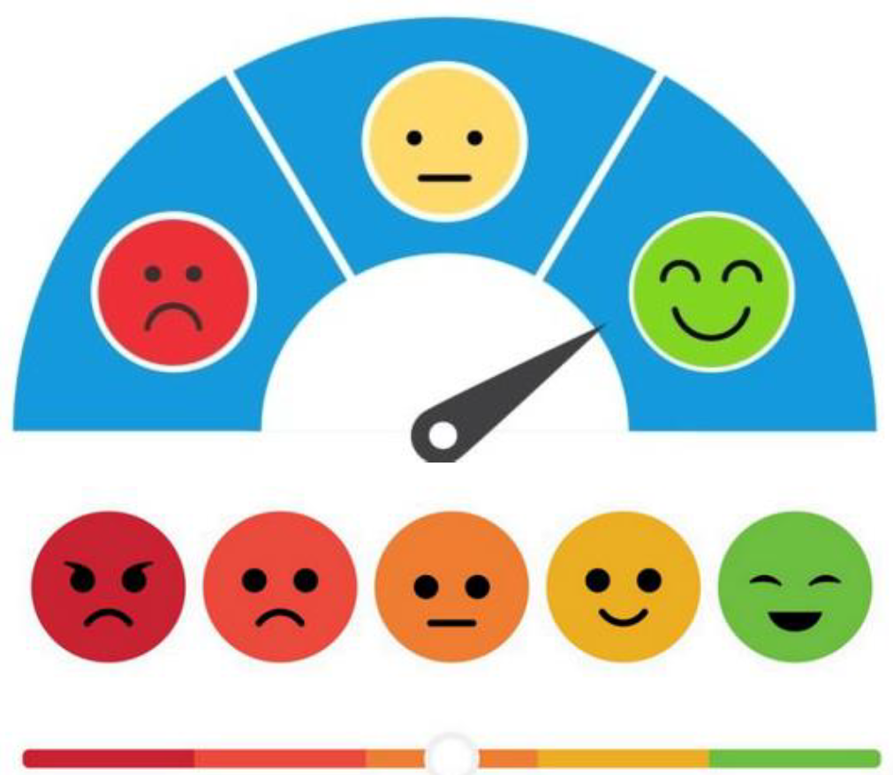

I led this sentiment analysis project using natural language processing techniques, which provided insights into customer feedback, contributing to a 20% improvement in customer satisfaction. I deployed the machine learning model locally using both streamlit and flask
I utilized Python and machine learning algorithms to analyze patient data from our clients Hospital. The resulting model effectively predicts heart disease risk, aiding early detection efforts.

In this project, I used Tableau to optimize HM Homes UK Property Price with the data provided by HM Homes. I was able to build incitive and interactive dashboard. I was able to give several recommendations after diagnosing the data to create a descriptive and diagnostic report.
I collaborated with a team of data experts and utilized Python to conduct a comprehensive Exploratory Data Analysis (EDA) on aircraft engines maintenance data for airline stakeholders. The insights gained improved understanding of engine health and optimized maintenance strategies.

By implementing a Python-powered supervised learning model for aircraft engine maintenance, I helped the airline achieve reduction in unscheduled maintenance events.

I partnered with Sterling to leverage cutting-edge data analysis techniques using excel. I explored their customer data to identify patterns and trends, providing valuable insights into customer behavior. By harnessing the value of data provided, Sterling is well-positioned for continued growth and success.
I harnessed the power of Excel to unlock valuable insights from vast datasets.
My meticulous data visualization skills brought the data to life through clear and impactful dashboards. My Excel-driven dashboards empowered Adidas with actionable insights to strengthen their US market position and optimize sales performance.

I leveraged machine learning (K-Means clustering) to automate product categorization for Terrano E Mart, leading to Improved website navigation, enhanced search functionalities and increased customer satisfaction.